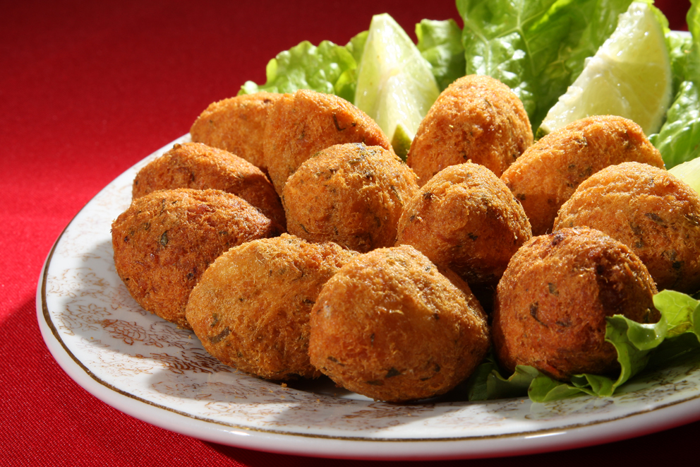

Bolinho de Bacalhau Carioca
Sobre a Receita
O bolinho de bacalhau carioca é um clássico que traduz a mistura de influências da culinária do Rio de Janeiro. Crocante por fora e macio por dentro, ele combina o sabor marcante do bacalhau com a leveza da batata e o toque caseiro do tempero brasileiro

🧾 Ingredientes
- 500 g de bacalhau dessalgado e desfiado
- 500 g de batatas
- 2 ovos
- 1 cebola média bem picada
- 2 dentes de alho picados
- 2 colheres (sopa) de salsinha picada
- Sal e pimenta-do-reino a gosto
- Azeite (opcional, para dar mais sabor)
- Óleo para fritar
👨🍳 Modo de Preparo
- Dessalgue o bacalhau: deixe-o de molho em água por 24 horas, trocando a água algumas vezes
- Cozinhe as batatas até ficarem bem macias e amasse-as como purê
- Refogue a cebola e o alho em um fio de azeite até dourarem levemente
- Misture tudo: em uma tigela, junte o bacalhau desfiado, o purê de batatas, os ovos, a salsinha, o refogado, sal e pimenta. Misture até formar uma massa homogênea
- Modele os bolinhos com duas colheres ou com as mãos, no formato tradicional alongado.
- Frite em óleo quente até dourar. Escorra em papel toalha.
⏱️ Preparo
30 minutos
🔥 Cozimento
20 minutos
🕒 Total
50 minutos
🍘 Rendimento
cerca de 25 a 30 bolinhos médios
💰 Custo Médio
aproximadamente R$ 50 a R$ 70 (dependendo da marca do bacalhau e região de compra)